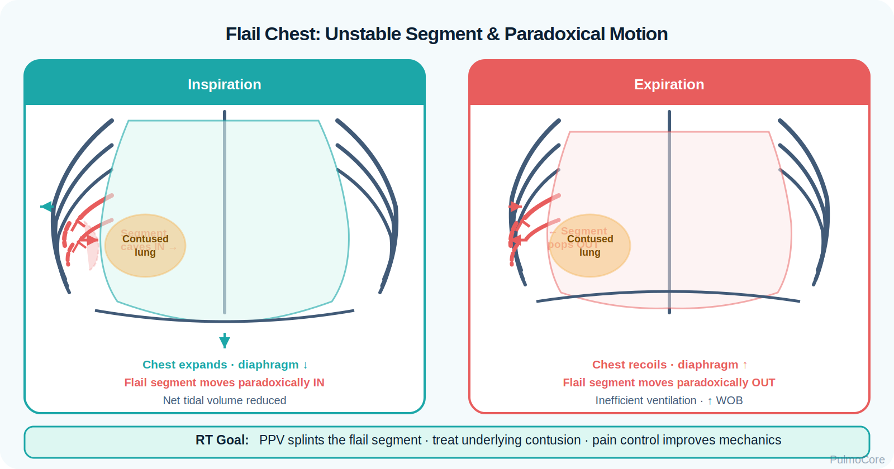
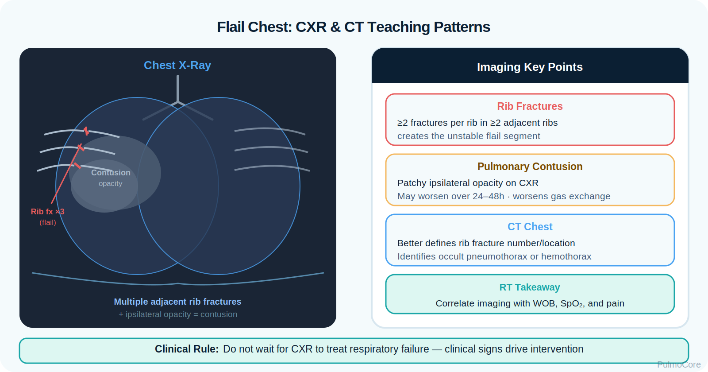

RT Clinical Connection
For RTs, flail chest is not just a rib fracture problem. The immediate question is whether the patient can ventilate deeply enough despite pain, chest wall instability, and possible lung contusion.
Flail chest is a life-threatening blunt chest trauma pattern where multiple adjacent ribs are fractured in multiple places, creating a free-floating chest wall segment. This module focuses on RT recognition, paradoxical movement, hypoventilation, pulmonary contusion risk, oxygenation/ventilation support, pain control coordination, and escalation when respiratory failure develops.
By the end of this flail chest module, learners should be able to connect blunt trauma mechanics, paradoxical chest wall movement, pain-limited ventilation, pulmonary contusion, diagnostic findings, RT assessment priorities, and escalation decisions.
Flail chest occurs when a segment of the thoracic cage loses structural continuity from the rest of the chest wall. The unstable segment may move inward during inspiration and outward during expiration, reducing effective ventilation and signaling significant chest trauma.
For RTs, flail chest is not just a rib fracture problem. The immediate question is whether the patient can ventilate deeply enough despite pain, chest wall instability, and possible lung contusion.
Associate flail chest with blunt trauma, paradoxical motion, severe pain, pulmonary contusion, hypoxemia, possible pneumothorax/hemothorax, and escalation to positive pressure ventilation when respiratory failure or fatigue develops.
Which statement best describes flail chest?
Flail chest begins with high-energy blunt trauma. Rib fractures separate a segment of the chest wall from the stable rib cage. Pain causes splinting and shallow breathing, while the unstable segment decreases chest wall efficiency. The underlying lung is often bruised, producing pulmonary contusion and impaired gas exchange.

Visual placeholder: Use this image to show rib fractures, unstable segment movement, and underlying contused lung tissue.| Change | What Happens | Why It Matters |
|---|---|---|
| Chest wall instability | A rib segment moves independently from the rest of the chest wall. | Breathing becomes inefficient and painful. |
| Paradoxical movement | The flail segment may move inward during inspiration and outward during expiration. | Signals significant mechanical injury. |
| Pain and splinting | The patient avoids deep breaths and coughing. | Raises atelectasis, secretion retention, and pneumonia risk. |
| Pulmonary contusion | Bruised lung tissue develops edema and bleeding. | Creates V/Q mismatch, reduced compliance, and hypoxemia. |
| Respiratory muscle fatigue | WOB rises as ventilation becomes less efficient. | Can progress to ventilatory failure. |
Worsening oxygen need, increasing respiratory rate, exhaustion, confusion, or rising PaCO₂ after chest trauma suggests the patient may be losing the ability to ventilate effectively.
Click each hotspot to reveal the mechanism and RT decision point.
Flail chest presentation depends on injury severity, pain, lung contusion, and associated trauma. RT assessment should focus on work of breathing, chest wall movement, breath sounds, SpO₂, mental status, cough strength, and gas exchange.
| Finding Type | What the RT May See |
|---|---|
| Trauma pattern | Recent MVC, fall, crush injury, or direct chest blow. |
| Chest movement | Paradoxical inward movement during inspiration and outward movement during expiration. |
| Pain behavior | Splinting, shallow breathing, reluctance to cough, guarding. |
| Breath sounds | Diminished sounds, crackles from contusion, or absent sounds if pneumothorax/hemothorax occurs. |
| Oxygenation clues | Low SpO₂, increasing FiO₂ requirement, cyanosis in severe cases. |
| Ventilation clues | Tachypnea early; rising PaCO₂, fatigue, or altered mental status late. |
Choose the best category for each item, then check your answers.
Diagnosis is clinical plus imaging. The RT helps trend oxygenation, ventilation, breath sounds, cough effectiveness, and response to therapy while the trauma team evaluates associated injuries.

Visual placeholder: Use this image to reinforce rib fracture location, flail segment, and lung contusion on imaging.| Assessment Tool | Expected or Important Findings | RT Meaning |
|---|---|---|
| Physical exam | Paradoxical segment, bruising, tenderness, crepitus, shallow breathing. | Identifies instability and pain-limited ventilation. |
| Chest x-ray | Rib fractures, pneumothorax, hemothorax, contusion signs. | Helps identify complications affecting oxygenation. |
| CT chest | Better visualization of fractures and pulmonary contusion. | Defines injury burden and associated trauma. |
| ABG/VBG trend | Hypoxemia, rising PaCO₂, acidosis if failing. | Supports escalation decisions. |
| Pulse oximetry | Low or worsening SpO₂. | Tracks oxygenation response. |
| Auscultation | Diminished sounds, crackles, absent unilateral sounds. | May suggest contusion, atelectasis, pneumothorax, or hemothorax. |
The danger in flail chest is not the visible deformity alone. The danger is progressive failure to oxygenate or ventilate due to lung contusion, pain, fatigue, and associated thoracic injury.
| Red Flag | Why It Matters |
|---|---|
| Increasing oxygen requirement | May indicate worsening contusion, atelectasis, pneumothorax, or hemothorax. |
| Rising PaCO₂ or falling pH | Suggests ventilatory failure from fatigue or inadequate ventilation. |
| Altered mental status or exhaustion | May indicate hypoxemia, hypercapnia, shock, or severe fatigue. |
| Absent unilateral breath sounds | Consider pneumothorax or hemothorax. |
| Hypotension, JVD, tracheal shift | Possible tension pneumothorax or shock; requires urgent escalation. |
| Poor cough with retained secretions | Raises atelectasis and pneumonia risk. |
Management focuses on oxygenation, ventilation, pain control, pulmonary hygiene, and treatment of associated injuries. Stabilizing the chest wall manually is not the primary modern solution; restoring effective ventilation and addressing complications are the priority.
| Priority | Examples | Why It Helps |
|---|---|---|
| Oxygenation | Supplemental O₂, HFNC, NIV, or invasive ventilation as indicated. | Corrects hypoxemia from contusion, atelectasis, or hypoventilation. |
| Pain control coordination | Analgesia, regional blocks/epidural per provider plan. | Allows deeper breathing, cough, and mobility. |
| Ventilatory support | NIV or intubation/mechanical ventilation when failing. | Reduces WOB and supports gas exchange. |
| Pulmonary hygiene | Incentive spirometry, coughing, splinting, secretion clearance when stable. | Prevents atelectasis and secretion retention. |
| Treat complications | Chest tube for pneumothorax/hemothorax if ordered. | Restores lung expansion and reduces life threats. |
| Surgical stabilization | Rib fixation in selected severe cases. | May improve mechanics and reduce ventilator duration in selected patients. |
Select the steps in the best general order for a trauma patient with suspected flail chest and respiratory distress.
Positive pressure can stabilize the chest wall internally and support ventilation, but the RT must monitor for associated trauma risks such as pneumothorax, worsening compliance from contusion, and shock.
For board-style questions, choose oxygenation and ventilatory support based on clinical failure signs. Do not delay escalation in a flail chest patient who is tiring, hypoxemic despite oxygen, or developing hypercapnia/acidosis.
The RT is central to recognizing deterioration, delivering oxygen/ventilatory support, encouraging lung expansion when safe, monitoring ABG trends, and communicating changes quickly to the trauma team.
| RT Task | What to Assess or Do | Why It Matters |
|---|---|---|
| Assess ventilation | RR, tidal volume appearance, PaCO₂ trend, mental status, fatigue. | Detects impending ventilatory failure. |
| Assess oxygenation | SpO₂, PaO₂, cyanosis, FiO₂ requirement. | Identifies worsening contusion or lung collapse. |
| Evaluate breath sounds | Diminished, absent, crackles, symmetry. | Helps detect pneumothorax, hemothorax, atelectasis, or contusion. |
| Support lung expansion | Incentive spirometry, cough coaching, splinting, early mobility when appropriate. | Reduces atelectasis and secretion retention. |
| Escalate concerns | Report worsening WOB, rising CO₂, altered LOC, shock signs, or absent breath sounds. | Triggers timely intervention. |
This guided case reveals one clinical stage at a time. Learners make an RT decision, receive feedback, and then continue to the next stage.
A 42-year-old patient arrives after a high-speed MVC. They have severe left chest pain, bruising, shallow breathing, and a visible segment of the lateral chest moving inward during inspiration.
Decision Question: What is the priority RT action?
Chest imaging shows fractures of ribs 4–7 in two places and a left pulmonary contusion. The patient remains tachypneic despite oxygen.
Decision Question: Which problem explains why oxygenation may worsen over the next several hours?
Two hours later the patient is more fatigued. SpO₂ is 90% on high-flow oxygen. ABG shows pH 7.31, PaCO₂ 52 mm Hg, PaO₂ 62 mm Hg.
Decision Question: What is the best interpretation and next RT recommendation?
Before initiating positive pressure support, the RT notes suddenly absent breath sounds on the left, worsening hypotension, and increasing distress.
Decision Question: What complication must be considered immediately?
Answer each question to complete this activity. Answer choices shuffle each time the lesson opens.
A patient after blunt chest trauma has ribs 3–6 fractured in two places and paradoxical inward motion during inspiration. What condition is most likely?
Which associated injury most commonly worsens gas exchange after significant blunt chest trauma with flail chest?
Which finding is most concerning in a flail chest patient?
What is the RT rationale for coordinating effective pain control in flail chest?
Flail chest is a chest wall instability problem caused by multiple rib fractures that create a free-floating segment.
Because it is no longer connected normally to the stable rib cage. Negative pressure during inspiration can pull the segment inward instead of outward.
No. Pain-limited ventilation and pulmonary contusion often drive hypoxemia and respiratory failure risk.
Bruised lung tissue can develop edema and bleeding, decreasing compliance and worsening V/Q mismatch over time.
Escalate when the patient has persistent hypoxemia, rising PaCO₂, acidosis, fatigue, altered mental status, or cannot maintain adequate ventilation.
Without adequate pain control, the patient splints, breathes shallowly, coughs poorly, and develops atelectasis or retained secretions.
After chest trauma, sudden unilateral absent breath sounds should raise concern for pneumothorax or hemothorax, especially if distress or hypotension worsens.
Flail chest is a severe blunt chest trauma pattern that creates an unstable chest wall segment. The RT must connect paradoxical movement, severe pain, pulmonary contusion, hypoxemia, secretion retention, and fatigue into one clinical picture.
Terms are stored once and can power inline tooltips, glossary entries, and flashcards.
Click the card to flip it. Use Term → Definition or Definition → Term mode. Mark known cards to move them into the completed pile.